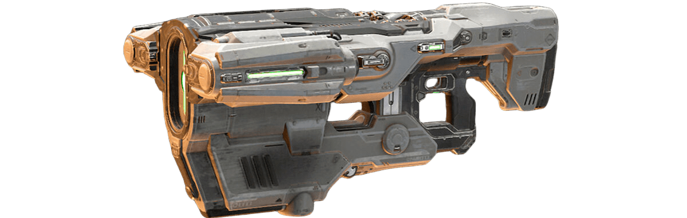
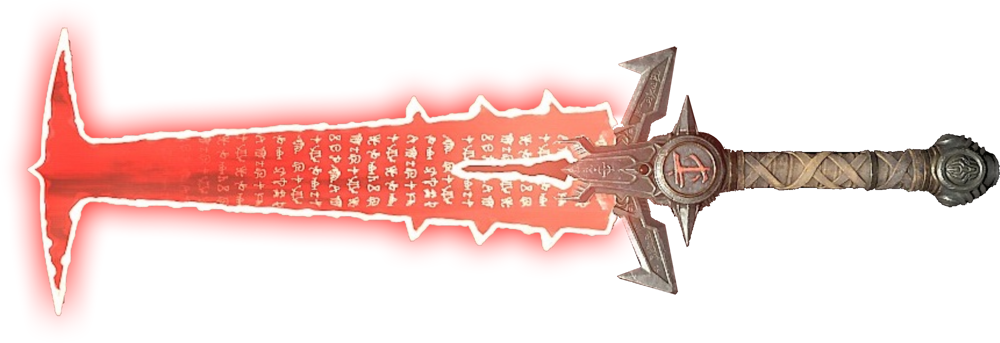
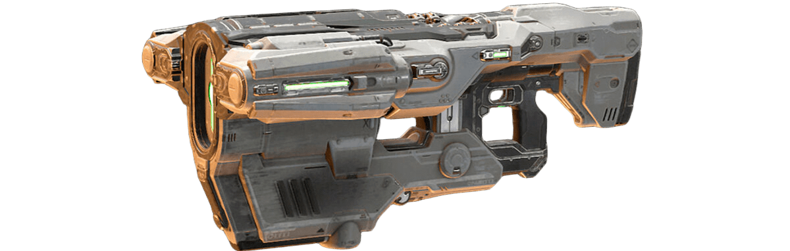
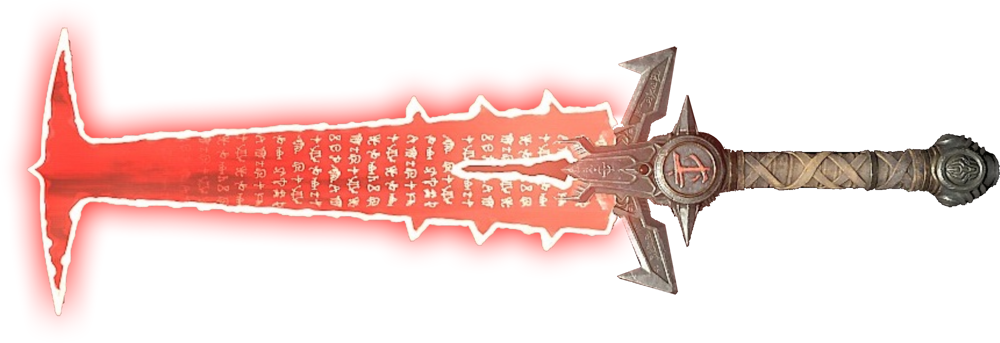
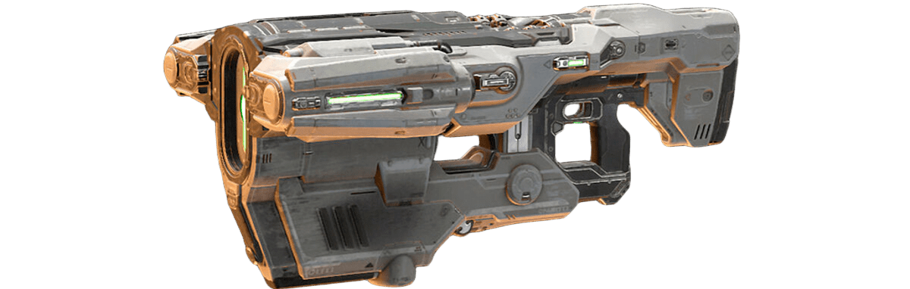
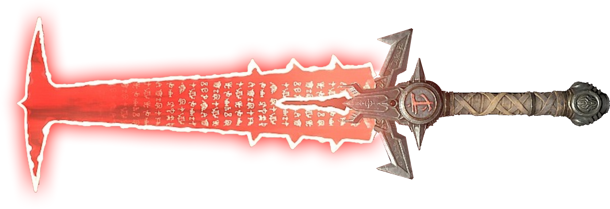

Las armas mas iconicas en la saga DOOM
Estas armas han definido la jugabilidad de DOOM: desde la clásica superescopeta hasta la poderosa BFG-9000.

 




Estas armas han definido la jugabilidad de DOOM: desde la clásica superescopeta hasta la poderosa BFG-9000.


A la hora de jugar los antiguos y clásicos DOOM, ¿cuáles Power-Up conviene tomar y cuáles no?


Estas modificaciones permitirán optimizar tu arsenal y serán útiles a la hora de destrozar (y desgarrar).


Estos intimidantes desafíos pueden facilitarse si utilizamos las estrategias adecuadas.